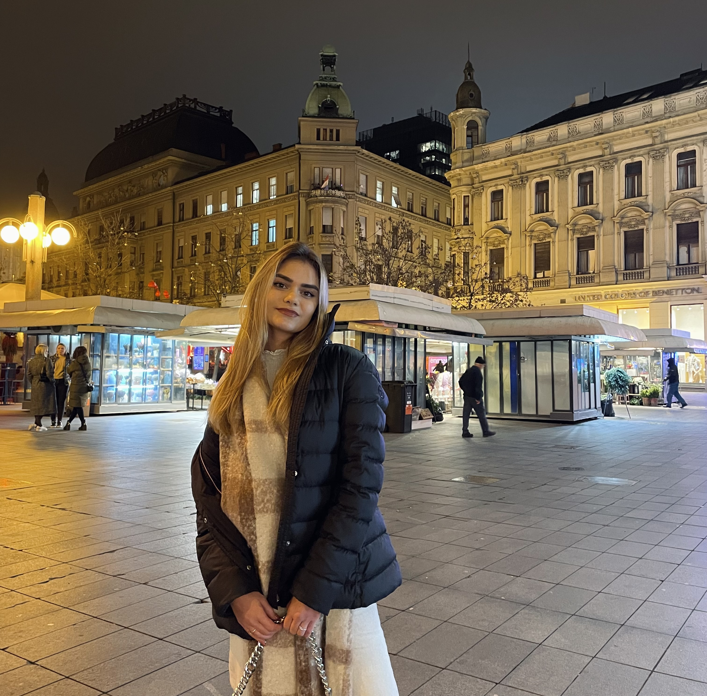

Welcome to my portfolio!
About me

My name is Vasilena Georgieva. I am 19 years old and I am from
Plovdiv, Bulgaria. I studied computer graphics as a high school major
in Bulgaria. Hence, I have been acquiring the skills of a graphic
designer for 5 years now and by being exposed to creativity and
originality and having participated in many group projects including
an Erasmus programme in Catania, Italy (working for a company called
Euromecc), I learned to draw inspiration from all of my surroundings.
Additionally, I have completed two internships in the areas of graphic
design and printing. I worked as a graphic designer in the advertising
sector for a local furniture company where my job was heavily oriented
towards digital media - digital brochures and web banners. I am
currently studying New Media Design in Jönköping University, Sweden.